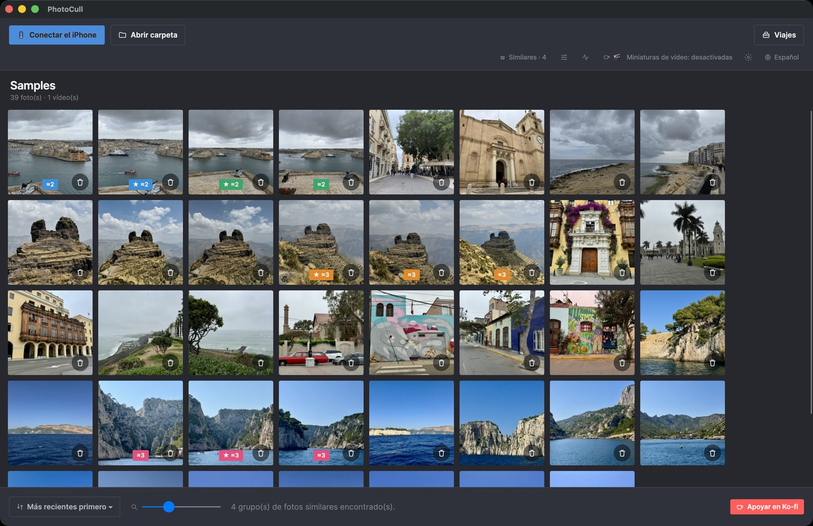
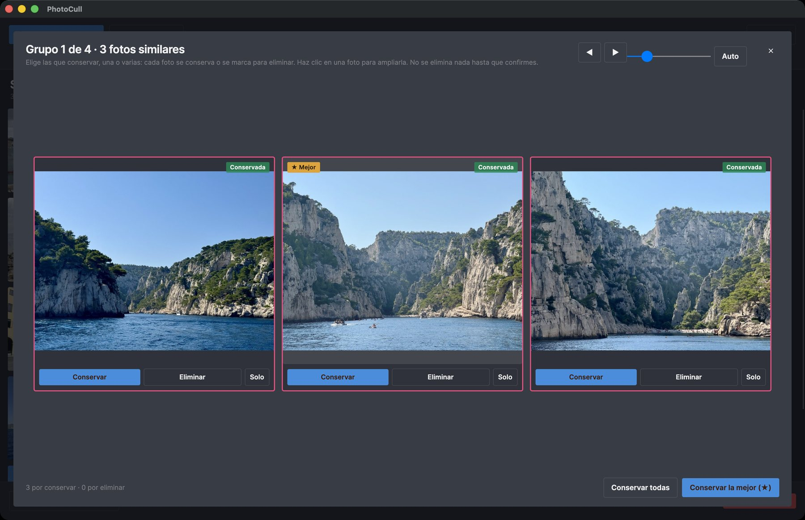
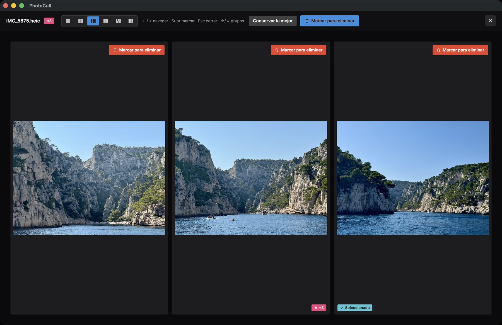

PhotoCull es una aplicación de escritorio completa: muestra todo el carrete de tu iPhone agrupado por estancia, compara tus fotos una junto a otra y elimina en masa lo que ya no vale la pena conservar — directamente desde tu Mac.
Gratis · macOS 11+ en Apple Silicon · firmada y notarizada por Apple



Toda tu biblioteca de fotos agrupada automáticamente por estancia (tiempo Y lugar, igual que la app de iOS) — detecta de un vistazo los viajes que ocupan más espacio.
Muestra hasta 6 fotos similares a la vez para elegir la mejor — ideal para ordenar ráfagas y casi duplicados.
Marca cientos de fotos en pocos clics. La eliminación real pasa por la app complementaria en tu iPhone y por «Eliminados recientemente» (30 días) — nunca una eliminación definitiva inmediata.
Ordena y filtra por estancia de 1 día, por lugar excluido (casa, trabajo...), por tamaño — los mismos filtros que en la app de iOS, pensados para ir rápido.
Conecta tu iPhone por USB (o usa el modo de simulación para probarlo): PhotoCull lee tu carrete directamente, sin pasar por iCloud ni por ningún servidor.
Ninguna foto ni ubicación GPS se envía nunca a ningún sitio. El reconocimiento de lugares funciona completamente en local, sin cuenta ni suscripción.
Nunca una suscripción. Explorar, comparar y ordenar es siempre gratis. Los planes solo fijan cuántas fotos puedes eliminar al día.
0 $
Explora, compara y ordena todo. 3 eliminaciones al día en el iPhone y hasta 6 fotos al día desde el Mac.
4,99 $ · pago único
Eliminación ilimitada en el iPhone, lugares personalizados ilimitados y acciones masivas en varias estancias. Hasta 15 fotos al día desde el Mac.
24,99 $ · pago único
Todo Pro, más eliminación ilimitada desde PhotoCull en tu Mac.
Precios en dólares estadounidenses; la App Store los muestra en tu moneda. Compras en la app de iOS TripSweep y PhotoCull lo sigue a través de tu iPhone. Ordenar una carpeta del Mac nunca está limitado.
Explorar, comparar y ordenar las fotos de tu iPhone funciona por sí solo: conéctalo por USB. Para eliminar de verdad fotos del iPhone también necesitas la app de iOS TripSweep (gratuita), que aplica la eliminación en el teléfono a través de «Eliminados recientemente» y hace casi instantáneo el análisis de estancias. Las carpetas del Mac se ordenan sin ella.